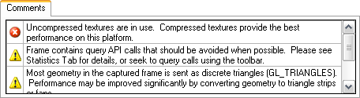

The "Comments" tab in the Scrubber GL lists warnings about potential performance issues detected Adreno Profiler for the captured frame.

Basic usage:
• Capture a frame from the connected application. The comments list will update to display warnings for the captured frame.